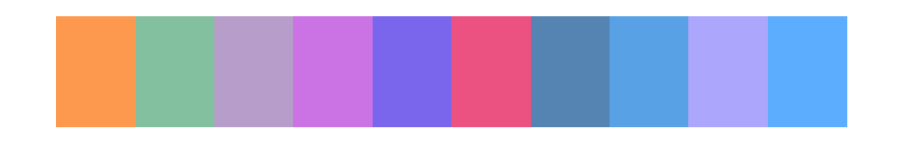

Intégration de la charte graphique dans les graphiques {ggplot2}
Margot Brard
2021-07-06
ba-charte-ggplot2.Rmd
library(bdxmetroidentity)Créer une palette de couleurs
La fonction create_palette_bdxmetro() retourne une fonction qui génère une palette de couleurs. Elle admet les arguments suivants :
-
name_palette: nom de la palette, -
reverse: indique si la palette doit être inversée ou non.
Il existe 6 ensembles de couleurs pré-définis :
- 2 pour les valeurs continues (
continuousetcontinuous2), - 2 pour les valeurs divergents (
divergentetdivergent2), - 2 pour les valeurs discrètes (
discreteetdiscrete2) + 1 version longue de 20 valeurs (discrete3).
La fonction show_palette_bdxmetro() permet de visualiser les couleurs d’une palette. Elle admet les arguments suivants :
-
colors: vecteur de couleurs (codes héxadécimaux) créé viacreate_palette_bdxmetro(), -
show_codes: indique si les codes héxadécimaux doivent être affichés ou non.
show_palette_bdxmetro(create_palette_bdxmetro("continuous")(10))
show_palette_bdxmetro(create_palette_bdxmetro("continuous2")(10))
show_palette_bdxmetro(create_palette_bdxmetro("divergent")(10))
show_palette_bdxmetro(create_palette_bdxmetro("divergent2")(10))
show_palette_bdxmetro(create_palette_bdxmetro("discrete")(10))
show_palette_bdxmetro(create_palette_bdxmetro("discrete2")(10))
Faire varier les couleurs utilisées dans les graphiques
4 fonctions permettent de faire varier les échelles de couleurs des graphiques :
-
scale_color_bdxmetro_continuous()pour les points et lignes représentant des valeurs continues, -
scale_fill_bdxmetro_continuous()pour les autres objets géométriques représentant des valeurs continues, -
scale_color_bdxmetro_discrete()pour les points et lignes représentant des valeurs discrètes, -
scale_fill_bdxmetro_discrete()pour les autres objets géométriques représentant des valeurs discrètes.
Ces 4 fonctions admettent les arguments suivants : - name_palette : nom de la palette, - reverse : indique si la palette doit être inversée ou non.
ggplot(data = iris) +
aes(x = Sepal.Width, y = Sepal.Length, color = Sepal.Length) +
geom_point() +
scale_color_bdxmetro_continuous()
ggplot(data = iris) +
aes(x = Sepal.Width, y = Sepal.Length, color = Sepal.Length) +
geom_point() +
scale_color_bdxmetro_continuous(name_palette = "continuous2")
ggplot(data = faithfuld) +
aes(x = waiting, y = eruptions, fill = density) +
geom_tile() +
scale_fill_bdxmetro_continuous()
ggplot(data = iris) +
aes(x = Sepal.Width, y = Sepal.Length, color = Species) +
geom_point() +
scale_color_bdxmetro_discrete()
ggplot(data = iris) +
aes(x = Sepal.Width, fill = Species) +
geom_density(alpha = 0.6, color = NA) +
scale_fill_bdxmetro_discrete()
ggplot(data = iris) +
aes(x = Sepal.Width, fill = Species) +
geom_density(alpha = 0.6, color = NA) +
scale_fill_bdxmetro_discrete("discrete2")Modifier le thème du graphique
Les fonctions theme_bdxmetro_light() et theme_bdxmetro_dark() permettent d’utiliser le thème light et le thème dark de Bordeaux Métropole. Ces fonctions admettent une série d’arguments qui permettent de modifier les éléments du graphique au besoin. Pour connaître les arguments concernés, il est possible d’accéder à la page d’aide de la fonction avec : help(theme_bdxmetro_light).
Il est également possible d’utiliser la fonction générique theme_bdxmetro() : theme_bdxmetro(theme = "light") ou theme_bdxmetro(theme = "dark")
plot_without_facets <- ggplot(data = iris) +
aes(x = Sepal.Width, fill = Species) +
geom_density(alpha = 0.6, color = NA) +
labs(title = "Largeur des s\u00e9pales des iris",
subtitle = "Ceci est un graphique qui respecte la charte Bordeaux M\u00e9tropole",
x = "Largeur des s\u00e9pales",
y = "Densit\u00e9",
fill = "Vari\u00e9t\u00e9 d\'iris",
caption = "Light mode")
plot_with_facets <- plot_without_facets +
guides(fill = "none") +
facet_grid(rows = vars(Species))
plot_with_linetype <- iris %>%
ggplot() +
aes(x = Sepal.Length, y = Sepal.Width, color = Species, linetype = Species) +
geom_point() +
geom_line()
plot_without_facets +
scale_fill_bdxmetro_discrete() +
theme_bdxmetro_light()
plot_with_facets +
scale_fill_bdxmetro_discrete() +
theme_bdxmetro_light()
plot_with_linetype +
scale_color_bdxmetro_discrete() +
scale_linetype_manual(values = c("setosa" = "dotted",
"versicolor" = "solid",
"virginica" = "solid")) +
theme_bdxmetro_light()
plot_without_facets +
scale_fill_bdxmetro_discrete() +
theme_bdxmetro_dark()
plot_with_facets +
scale_fill_bdxmetro_discrete() +
theme_bdxmetro_dark()
plot_with_linetype +
scale_color_bdxmetro_discrete() +
scale_linetype_manual(values = c("setosa" = "dotted",
"versicolor" = "solid",
"virginica" = "solid")) +
theme_bdxmetro_dark()